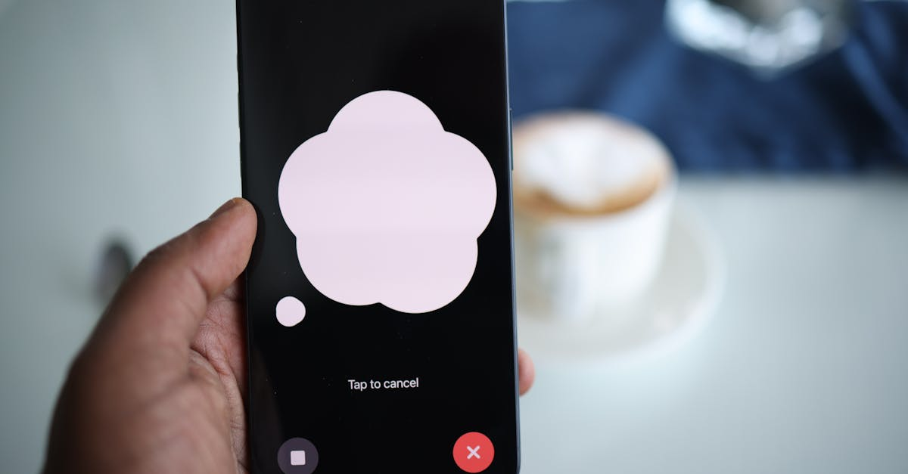

DeepL, le géant de la traduction, s'aventure dans la voix
DeepL, l'entreprise allemande qui a révolutionné la traduction automatique grâce à son intelligence artificielle de pointe, ne cesse de repousser les limites de la technologie linguistique. Après avoir conquis le monde avec des traductions écrites d'une précision inégalée, souvent comparées à celles d'un traducteur humain, DeepL annonce une nouvelle étape majeure : l'intégration de ses capacités à la traduction vocale en temps réel. Cette expansion logique s'appuie sur les mêmes réseaux neuronaux profonds et les mêmes algorithmes d'apprentissage automatique qui ont fait son succès. L'objectif est clair : briser les barrières de la communication orale dans un monde de plus en plus interconnecté. Imaginez des réunions virtuelles où les participants, quelle que soit leur langue maternelle, peuvent s'exprimer et se comprendre instantanément. DeepL vise à intégrer sa technologie dans des plateformes populaires telles que Zoom, Microsoft Teams et Google Meet, promettant une expérience utilisateur fluide et naturelle. Cette avancée ne se limite pas aux conversations professionnelles ; elle ouvre des perspectives considérables pour le tourisme, l'éducation internationale et, bien sûr, les marchés financiers globaux, où la rapidité et la précision de l'information sont cruciales. La capacité de DeepL à traiter et à traduire des nuances linguistiques complexes, y compris le ton et le contexte, laisse présager une qualité de traduction vocale qui pourrait bien redéfinir les standards de l'industrie.

La technologie derrière la prouesse vocale de DeepL
Le succès de DeepL repose sur une architecture d'intelligence artificielle sophistiquée, notamment l'utilisation intensive du deep learning. Contrairement aux systèmes de traduction traditionnels basés sur des règles ou des modèles statistiques plus anciens, DeepL exploite des réseaux neuronaux artificiels capables d'apprendre et de s'améliorer continuellement à partir d'énormes volumes de données textuelles multilingues. Cette approche permet de capturer des subtilités sémantiques, des idiomes et des structures grammaticales complexes avec une finesse remarquable. Pour la traduction vocale, DeepL combine cette expertise linguistique avec des technologies de reconnaissance vocale (ASR - Automatic Speech Recognition) et de synthèse vocale (TTS - Text-to-Speech) de nouvelle génération. L'ASR transforme les paroles prononcées en texte, tandis que le moteur de traduction de DeepL traite ce texte pour le traduire dans la langue cible. Enfin, le TTS recrée le contenu traduit sous forme de parole audible, en essayant de préserver l'intonation et le rythme de l'orateur original. La prouesse réside dans l'intégration transparente et la faible latence de ces trois composants. Les défis sont nombreux : gestion des accents, des bruits de fond, des interruptions, et surtout, la traduction fidèle du sens et de l'intention, pas seulement des mots. DeepL semble avoir développé des modèles capables de gérer ces complexités, se rapprochant d'une communication orale sans friction. Cette capacité à traiter rapidement et précisément le langage parlé ouvre la voie à des applications où la réactivité est primordiale, un atout indéniable dans des domaines comme le trading algorithmique.
Implications pour les marchés financiers et le trading crypto
Dans l'univers trépidant de la finance, et plus particulièrement du trading de cryptomonnaies, la vitesse et l'accès à l'information sont des facteurs déterminants. Les marchés des actifs numériques sont notoirement volatils, et une nouvelle, une annonce ou une discussion en temps réel peut provoquer des mouvements de prix significatifs en quelques minutes, voire secondes. L'arrivée d'une technologie de traduction vocale performante comme celle envisagée par DeepL présente plusieurs implications majeures :
- Accès global à l'information : Les traders et analystes pourront suivre en temps réel des conférences, des interviews ou des discussions sur des plateformes comme Telegram, Discord ou Twitter Spaces, même si elles se déroulent dans une langue étrangère. Cela élargit considérablement le bassin d'informations exploitables.
- Analyse de sentiment multilingue : La capacité à comprendre instantanément les conversations dans différentes langues permet une analyse de sentiment plus fine et plus large. Identifier les tendances émergentes ou les sentiments négatifs dans des communautés linguistiques spécifiques devient plus accessible.
- Collaboration internationale : Les équipes de trading décentralisées ou les analystes travaillant dans différentes régions du monde pourront communiquer plus efficacement, partageant des insights et coordonnant des stratégies sans délai linguistique.
- Trading algorithmique et agents IA : C'est ici que la pertinence pour des solutions comme celles de CryptoMind AI devient évidente. Un agent IA de trading pourrait, par exemple, être entraîné à surveiller des flux d'actualités vocales internationales. En cas de détection d'un événement potentiellement impactant pour une cryptomonnaie donnée (par exemple, une annonce réglementaire dans une langue asiatique), l'agent pourrait non seulement traduire l'information instantanément, mais aussi l'analyser et exécuter des ordres de trading en fonction de sa stratégie préprogrammée. La latence réduite de la traduction vocale est un avantage compétitif dans l'exécution d'ordres basés sur des événements sonores.
En somme, cette avancée technologique pourrait démocratiser l'accès à une information financière plus diversifiée et permettre aux acteurs les plus réactifs, y compris les agents IA sophistiqués, de bénéficier d'un avantage informationnel accru.
Le parallèle avec les agents IA de trading crypto
Le développement de la traduction vocale par DeepL, bien que centré sur la communication interpersonnelle, résonne profondément avec les avancées dans le domaine des agents IA dédiés au trading de cryptomonnaies. Ces agents, comme ceux que nous développons chez CryptoMind AI, sont conçus pour analyser d'énormes quantités de données, identifier des patterns et exécuter des transactions de manière autonome, 24h/24. L'intelligence artificielle sous-jacente partagent des principes communs : traitement du langage naturel (NLP), apprentissage automatique et capacité à réagir à des stimuli complexes. La capacité de DeepL à comprendre et traduire la voix humaine en temps réel peut être vue comme une extension des capacités de traitement de l'information d'un agent IA. Imaginons un agent qui ne se contente pas de lire des articles ou des flux de données structurés, mais qui peut aussi écouter et interpréter des discussions vocales sur des forums spécialisés, des conférences ou des annonces publiques. Cela enrichit considérablement la palette de données qu'un agent IA peut exploiter. Par exemple, un agent pourrait être programmé pour détecter un changement de ton ou un sentiment exprimé vocalement par un dirigeant d'entreprise lors d'une conférence téléphonique, et corréler cette information avec des mouvements de prix sur les marchés actions ou crypto. La traduction vocale instantanée devient alors un outil puissant pour débloquer des signaux d'investissement potentiels qui resteraient autrement inaccessibles. La clé réside dans la capacité de l'IA à traiter non seulement le contenu littéral, mais aussi le contexte, l'émotion et l'intention véhiculés par la parole. C'est précisément ce que DeepL cherche à maîtriser avec sa technologie vocale, et c'est une compétence essentielle pour les agents IA de trading les plus avancés qui visent à prédire les mouvements du marché avec une précision accrue.
Défis et opportunités pour l'adoption de la traduction vocale IA
Malgré l'enthousiasme suscité par les annonces de DeepL, l'adoption généralisée de la traduction vocale en temps réel soulève plusieurs défis. La précision reste le maître mot. Bien que DeepL ait établi une référence en traduction écrite, la voix humaine est intrinsèquement plus complexe à traiter. Les variations d'accent, la vitesse de parole, le jargon technique, les bruits ambiants et même les émotions peuvent introduire des erreurs de transcription ou de traduction. Assurer une fidélité quasi parfaite dans toutes les conditions est un défi technique monumental. La latence est un autre facteur critique, surtout pour les applications financières où chaque milliseconde compte. Une traduction avec un délai perceptible pourrait rendre l'information inutile, voire trompeuse, dans un marché en évolution rapide. DeepL devra optimiser ses flux de traitement pour minimiser ce délai. La confidentialité et la sécurité des données sont également des préoccupations majeures, particulièrement lorsque des conversations sensibles sont traduites. Les utilisateurs devront avoir l'assurance que leurs échanges vocaux sont traités de manière sécurisée et conformément aux réglementations sur la protection des données. Cependant, les opportunités sont immenses. Au-delà des réunions d'affaires, on peut imaginer des applications pour l'assistance aux voyageurs, l'éducation à distance, l'accès à l'information pour les personnes malentendantes, et bien sûr, l'amélioration des flux d'information pour les professionnels de la finance. Pour les agents IA de trading, l'opportunité est de pouvoir accéder à une nouvelle source de données non structurées, riche en signaux potentiels. L'intégration de cette technologie pourrait permettre de développer des stratégies de trading plus robustes, capables de réagir à des informations nuancées et contextuelles, allant au-delà des simples indicateurs techniques ou des dépêches écrites.
L'avenir de la communication : une convergence IA-humain
L'évolution vers une traduction vocale en temps réel, propulsée par des acteurs comme DeepL, s'inscrit dans une tendance plus large de convergence entre l'intelligence artificielle et la communication humaine. L'IA n'est plus seulement un outil d'analyse ou d'automatisation ; elle devient un médiateur, un facilitateur, et potentiellement, un partenaire dans nos interactions quotidiennes. La capacité de l'IA à comprendre et à générer du langage naturel, qu'il soit écrit ou parlé, brouille les lignes entre la machine et l'humain. Pour le monde du trading et de la finance, cela signifie une redéfinition des rôles. Les traders humains pourront se concentrer sur des tâches à plus forte valeur ajoutée – stratégie, prise de décision complexe, gestion des risques – tandis que l'IA s'occupera de la surveillance des marchés, de l'analyse rapide des flux d'information multilingues et de l'exécution des transactions. Des agents IA comme ceux de CryptoMind AI, capables de traiter des informations vocales traduites en temps réel, deviendront des assistants inestimables, voire des co-pilotes, pour naviguer dans la complexité des marchés financiers globaux. L'objectif ultime est de créer un écosystème où l'information circule librement, où les barrières linguistiques sont abolies, et où les décisions peuvent être prises sur la base d'une compréhension plus complète et plus rapide du monde. La traduction vocale n'est qu'une pièce du puzzle, mais elle est essentielle pour réaliser cette vision d'une communication véritablement globale et instantanée, alimentée par l'IA.
Conclusion : L'IA vocale, un catalyseur pour l'innovation financière
L'incursion de DeepL dans la traduction vocale en temps réel marque une étape significative dans l'évolution de l'intelligence artificielle appliquée à la communication. En rendant la parole franchissable par-delà les frontières linguistiques, cette technologie promet de transformer la manière dont nous interagissons, apprenons et commerçons. Pour le secteur de la finance et du trading de cryptomonnaies, les implications sont particulièrement profondes. La capacité à accéder et à comprendre instantanément des informations orales provenant du monde entier ouvre de nouvelles voies pour l'analyse, la stratégie et la prise de décision. Les agents IA de trading, tels que ceux que nous développons chez CryptoMind AI, sont idéalement positionnés pour tirer parti de ces avancées. En intégrant des capacités de traitement vocal multilingue, ces agents pourront identifier des opportunités de marché plus subtiles et réagir avec une rapidité inégalée. Bien que des défis subsistent en termes de précision, de latence et de sécurité, le potentiel de cette technologie est indéniable. Elle ne fera pas que faciliter la communication ; elle deviendra un outil puissant pour l'innovation, permettant une compréhension plus riche et plus rapide des marchés mondiaux. L'avenir du trading, qu'il soit humain ou assisté par IA, sera sans aucun doute façonné par cette capacité croissante de l'intelligence artificielle à démystifier et à fluidifier le langage sous toutes ses formes.